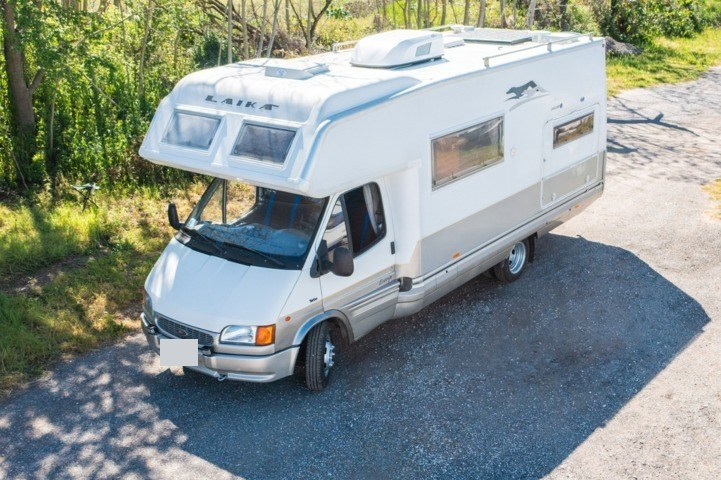

6 posti in viaggio, 7 posti letto, 6,80 m. Motore rifatto, climatizzatore con pompa di calore, batteria al litio. 19.000 €.

| Marca e modello | Laika Ecovip |
|---|---|
| Tipologia | Mansardato |
| Anno | 1995 |
| Chilometri | 188.564 km al contachilometri, con motore rifatto |
| Lunghezza | 6,80 m |
| Posti in viaggio | 6 |
| Posti letto | 7 |
| Prezzo | 19.000 € |
Camper Laika Ecovip mansardato del 1995, lungo 6,80 m, con 6 posti in viaggio e 7 posti letto. Il contachilometri segna 188.564 km, ma il motore è stato rifatto completamente. È controllato, efficiente e pronto a partire.
Lavori eseguiti e confermati da CDA: motore rifatto completamente, pompa compresa; gomme nuove; climatizzatore da tetto con pompa di calore; impianto con batteria al litio; inverter a onda pura da 2000/4000 W con by-pass; retrocamera e terzo occhio; 10 prese USB; antenna TV e TV smart a 12 V.